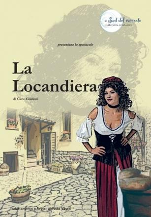

Carlo Goldoni

La locandiera
Il mio autore preferito
HOME - LA SUA VITA - LE SUE OPERE

HOME - LA SUA VITA - LE SUE OPERE
La locandiera è una commedia in tre atti scritta da Carlo Goldoni nel 1753. Venne rappresentata per la prima volta al Teatro Sant'Angelo di Venezia.
La storia si incentra sulle vicende di Mirandolina, un'attraente e astuta giovane donna che possiede a Firenze una locanda ereditata dal padre e la amministra con l'aiuto del cameriere Fabrizio.
Questa commedia è suddivisa in tre atti; la protagonista Mirandolina è un’imprenditrice che, a seguito della morte del padre, gestisce da sola una locanda a . Mirandolina è una donna borghese attenta ai suoi interessi, giovane, dotata di grazia e di spirito tanto che capisce che il suo albergo può continuare ad avere successo solo se riuscirà a conservare il favore dei nobili che lo frequentano, attirando quindi la simpatia dei clienti.
Il personaggio principale, Mirandolina, è una donna che sa fingere, astuta, furba, pratica, testarda e risoluta; alle sue dipendenze lavora , un giovane innamorato di Mirandolina e che il padre, morendo, le ha consigliato di sposare, una persona ironica ma allo stesso tempo avida e furba.
L’inizio del primo atto è ambientato nella locanda in cui il ricco di Albafiorita e il di Forlipopoli, entrambi innamorati di Mirandolina, vengono tenuti a bada da essa.
Il Conte si presenta arrogante con il ma generoso con , un personaggio nuovo, un nobile acquisito (borghese), materialista, pratico e che crede nei soldi, mentre il viene rappresentato come un nobile legato alla tradizione, un uomo di altri tempi, arrogante, superbo e squattrinato, essi gareggiano uno contro l’altro criticandosi a vicenda, ognuno con l’illusione di avere più meriti nei confronti di Mirandolina.
Sulla scena si presenta anche il Cavaliere di Ripafratta che si fa vanto di disprezzare le donne, di non essere mai stato innamorato, un uomo arrogante, superbo, diffidente, convinto di sè e ingenuo.
La Locandiera, un po’ per ripicca contro la scontrosità del Cavaliere, mette in atto tutte le sue arti per riconquistarlo: finge di apprezzare il suo comportamento e il disprezzo per le donne, mostrandosi contraria ai due forestieri, lo riempie di gentilezze portandogli anche di persona la biancheria pulita costruendo così una sorta di solidarietà, tanto che il Cavaliere comincia a considerarla una donna eccezionale, di grande buon senso e schiettezza., continua nel suo intento di conquistare il Cavaliere mettendo in atto le sue armi di seduzione.
Nel secondo atto il Cavaliere cede alle sue tentazioni, si addolcisce fino ad innamorarsi; Mirandolina ha vinto e intende rendere pubblica la sua vittoria, non si accontenta di quello ottenuto e lo fa ingelosire, lo tormenta e gli fa confessare davanti agli altri il suo amore e alla fine decide di sposare.
Il dibattito è basato sulla critica alla nobiltà definita improduttiva mentre viene messa in evidenza la borghesia come classe produttiva e il valore del lavoro di cui è simbolo Mirandolina e Viene mossa una critica alla nobiltà come fa nelle sue opere, viene presentata una nobiltà arrogante, superba, decadente ed impoverita che viene sovrastata dall’affermarsi della borghesia, una classe sociale pratica, avida, sempre alla ricerca dell’utile in cui domina l’astuzia e la furbizia.
Fonte : www.seduco.it
Copyright ©Ivascu